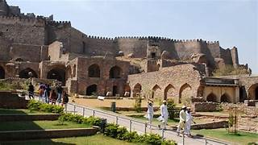
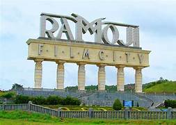

"Get lost in heaven
HYDERABAD"

Charminar
The Charminar is situated on the east bank of Musi River.[5] To the west lies the Laad Bazaar, and to the southwest lies the richly ornamented granite Makkah Masjid.[6] It is listed as an archaeological and architectural treasure on the official list of monuments prepared by the Archaeological Survey of India.[7] The English name is a translation and combination of the Urdu words chār and minar or meenar, translating to "Four Pillars"; the eponymous towers are ornate minarets attached and supported by four grand arches.[6]

Golconda
The origins of the Golconda fort can be traced back to the 11th century. It was originally a small mud fort built by Pratāparudra of the Kakatiya Empire.[3] The name Golconda is thought to originate from Telugu for "Cowherd's hill" (గొల్ల కొండ, romanized: Gullakōnḍa).[4][5] It is also thought that Kakatiya ruler Ganapatideva 1199–1262 built a stone hilltop outpost — later known as Golconda fort — to defend their western region.[6] The fort was later developed into a fortified citadel in 1518 by Sultan Quli of the Qutb Shahi Empire and the city was declared the capital of the Golconda Sultanate.[5]

Ramoji Film City
The film city is the brainchild of media tycoon and film producer Ramoji Rao, who wanted to build a studio similar to the ones in Hollywood.[1] On procuring the land, he signed art director Nitish Roy to design the complex. According to an executive, the builders kept the land, which at that time consisted of jungles and mountainous terrain, intact, without removing one tree or mountain. It was built in Hyderabad in 1996 in the outskirts of the city in Abdullahpurmet.[10] Maa Naannaku Pelli (1997) was the first film shot in the studio.[11]